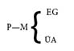
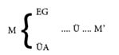
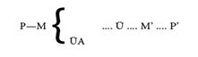
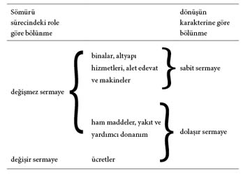
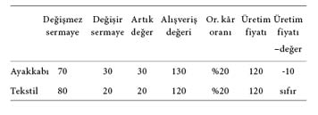

1. METALAR
Meta her şeyden önce insanın bir ihtiyacını karşılayan, ikinci olarak da, birinin kendi bireysel tüketimi için değil, mübadele (satış) amacıyla üretilen bir insan emeği ürünüdür.
Meta üretimi kapitalist üretimden eskidir. Feodal toplumun dağılma döneminde basit meta üretimi kapitalist üretimin doğuşunun temelini oluşturmuştu.
Basit meta üretiminin unsurları şunlardır:
Bunun kapitalist üretimden farkı şuradadır: Basit meta üretiminin temeli, metaları üretenlerin bireysel emeğidir. Ama özel mülkiyete dayanması, köylüler ile zanaatçıların bir bölümünün servet edinmesine, başkalarının ise bütün varlıklarını yitirmelerine yol açar. O hâlde basit meta üretiminin (küçük meta üretimi) kapitalist ilişkilerin gelişmesinin kökünde yattığını söyleyebiliriz.
Kapitalist sistemde meta üretimi genelleşmiş bir biçimde hâkimdir. Emek ürünü, üretim araçları ve emek gücü hep birer meta hâline gelmiştir.
Marx, kapitalizmi genelleşmiş meta üretimi olarak incelediği için (örneğin küçük meta üretiminin bir dereceye kadar var olduğu) kapitalizm öncesi toplumların işleyişi konusunda ve meta üretiminin henüz tamamen körelmemiş olduğu kapitalizm sonrası toplumlar konusunda bazı ipuçları verir.
2. KULLANIM DEĞERİ
Bir nesnenin, insanların şu ya da bu ihtiyacını gidermesini sağlayan özellikleri, o nesneyi bir kullanım değeri hâline getirir. Kullanım değeri, hangi toplumsal biçime bürünürse bürünsün zenginliğin maddi içeriğini temsil eder. Ne var ki kullanım değeri olan her şey meta değildir. Bir nesnenin meta hâline gelmesi için satılmak üzere tasarımlanmış bir emek ürünü olması gerekir. Dolayısıyla piyasa ekonomisinde kullanım değerinin bir metanın mübadele değerini kapsadığını söyleyebiliriz.
Örneğin bir feodal beyin hizmetinde çalışan kunduracı onun için ayakkabı üretir. Kunduracı, bir aylık alıyor olabilir. Gene de kunduracı meta üretmez. Emeğinin ürünleri piyasada satılmaz. Yalnızca kullanım değeri üretmiş olur (ama değer de artık değer de üretilmiş olmaz).
Bir ürünün mübadele edilebilmesi için kullanım değerinin olması gerekir. Ne var ki bu, ancak ürünün mübadelesinin bir sonucu olarak gerçekleşebilir.
3. DEĞER
Piyasa ekonomisinde mübadele değeri her şeyden önce iki ayrı kullanım değerinin karşılaştırıldığı nicel bir ilişki olarak görünür (örneğin bir çift ayakkabı ile bir çuval patates). Ayakkabılar bir çuval patatesle mübadele edilme amacıyla piyasada denendiğinde bunun anlamı, o bir çuvala değer olduklarıdır.
Ne var ki farklı metaların kullanım değerleri, nitelikçe farklı oldukları için nicel bir karşılaştırmaya doğrudan doğruya tabi tutulamaz. Bu kullanım değerlerini mübadele sırasında karşılaştırılabilir kılan tek ortak özellik hepsinin emek ürünü oluşudur. O hâlde bir çift ayakkabı ile bir çuval patates arasındaki eşitliğin temelinde bunları üretmek için harcanan toplumsal emeği buluruz. Demek ki değer metaları üretmek için gerekli olan toplumsal emeğin dolaylı bir ölçüsüdür.
Metanın mübadele değeri onun değerinin ifade biçimidir.
4. SOMUT EMEK VE SOYUT EMEK
Öyleyse meta ikili bir karakter sergiler: kullanım değeri ve değer. Bu ikili karakter, ona katılan emeğin ikili karakteriyle belirlenir.
Emek türleri kullanım değerleri kadar birbirinden farklıdır. Öyleyse her bir kullanım değeri, belirli bir emek türünü temsil eder. Emek, belirli bir biçimde harcandığı zaman somut emeği temsil eder (demek ki somut emek ile kullanım değeri arasında bir tekabül vardır: kunduracılık ayakkabılara, çiftçilik patateslere tekabül eder).
Mübadele oluştuğunda, metalar arasında yapılan karşılaştırma, farklı somut emek biçimlerinin “benzeştirilip” eş değerli sayıldığı anlamına gelir. Onun için farklı somut emek biçimleri, ortak bir özelliğe sahiptir. Her türlü somut emeğin ortak paydasının ifadesi küçüklü büyüklü bir enerji harcamasıdır. Metayı üretenlerin emeği, genel olarak insanların emek gücünün harcanması olarak ele alındığında (somut biçiminden soyutlanarak) soyut emek adını alır. Soyut emek, metanın değerini belirler.
Üretim araçlarında özel mülkiyetin hüküm sürdüğü bir toplumda emeğin bu ikili karakteri (her türlü emek hem soyut hem somuttur), üreticilerin özel emeği ile toplumsal emeği arasındaki çelişkiyi yansıtır. Özel mülkiyet bireyleri ayırır (her bir üreticinin emeği onların “özel iş”idir). Farklı üreticilerin emeği toplumun bütünü çapında eş güdümlenmez. Ne var ki toplumsal iş bölümü, birbirinden kopuk, ayrı üreticiler arasında çoklu bağlantılar yaratılmasına önayak olur. İş bölümü ne denli gelişirse farklı üreticiler tarafından gösterilen faaliyetlerin çeşitliliği, bunlar arasında var olan karşılıklı bağımlılık o denli gelişir.
Bu nedenle başkalarından “ayrı”, soyutlanmış üreticinin emeği toplumsal bir emektir. Toplumun bütününün emeğinin bir parçasını oluşturur. Üreticinin başkalarından soyutlanmasından (özel mülkiyetle bağlantılı parçalanma) ötürü üreticinin emeğinin toplumsal karakteri gizli kalır. Kendini ancak mübadele sırasında ifade eder. Ancak mübadele fiili içindedir ki üreticinin emeği, toplumdan “uygunluk” alır ya da ondan yoksun edilir (piyasa bu emeğe toplumun ihtiyaç duyup duymadığını belirler).
Metanın değerini üreten soyut emek tarihî bir kategoridir. Toplumsal emeğin piyasa ekonomisinde aldığı özgül biçim budur. Emeğin bir daldan ötekine hareketi –tarihte eşi görülmemiş bu dalgalanma– somut kapitalist gerçekliğin temelinde soyut emek kavramının yattığını somut olarak gösterir.
Feodalite döneminde toplumsal emek soyut emek biçimini almamıştı. Feodal bey, serfleri artık üründen (ya emek-rant ya da ayni rant biçiminde) dolaysız bir şekilde (yapılan iş yoluyla ya da ürün cinsinden) yoksun ediyordu. Emeğin toplumsal karakteri somut bir biçimde ifadesini buluyordu. Meta toplumunda (küçük meta üretimi ve genelleşmiş meta üretimi) ürünler piyasa için yapılır (ve esas olarak tüketime yönelik değillerdir) Böylece emeğin toplumsal karakteri, üreticinin bilgisi dışında oluşan bir süreç aracılığıyla piyasada ifadesini bulur. Emeğin somut biçimleri, metanın değerini oluşturan soyut emek aracılığıyla düzenlenir.
5. BASİT EMEK VE KARMAŞIK EMEK
Karmaşık veya bileşik –ya da nitelikli– emek. İçine aldığı başka emek ögeleriyle gücü toplumsal ortalamanın üstüne çıkarılmış emektir. Toplumsal yetiştirme gerektiren emek karmaşık emektir (bileşik ya da nitelikli emek).
Bileşik emek aynı sürede basit emekten daha büyük bir değer yaratır. Karmaşık emekle üretilmiş bir metanın değeri, emeğin, işçinin yetiştirilmesi ve işçinin niteliklerinin iyileştirilmesine ayrılmış olan parçasını da kapsar. Böylece karmaşık emek, birkaç katına çıkarılmış basit emek anlamını kazanır. Üretim araçlarında özel mülkiyete dayalı meta üretimi söz konusu olduğunda karmaşık emeğin bütün farklı türleri basit emeğin katları olarak ifade edilebilir. O zaman metanın değerinin büyüklüğü üretilmesi için toplumsal olarak gerekli basit emek miktarıyla belirlenmiş olur.
Her bir metada “kapsanmış” üretken emek miktarının hesaplanmasında tarihin kendisinin (sadece Marksistlerin kafalarındaki değil) ölçütünün gerekli emek-zaman uzunluğu olduğu ortaya çıkıyor.
Nitelikleri çeşitli olan işçiler tarafından yapılan üretim, teknisyenlerin, nitelikli işçilerin ve üretim mühendislerinin üretim sürecine müdahalesini işin içine katar. Nitelikleri edinmek için gerekli olan yetiştirme gerek öğrenci gerek öğretmen açısından bir enerji harcamasını temsil eder. Bu harcama ya doğrudan doğruya üretkendir ya da üretken emek harcanırken şu veya bu şekilde üretken emeğin içine katılır. Böylece aşağıdaki kavramlara ulaşıyoruz:
Basit emek: Marx, bunu “fiziksel organizmalarını özel olarak geliştirmeye girişmeksizin herkesin genel olarak sahip olduğu basit güç harcaması” diye tanımlar (niteliksiz işçilerin iş rotasyonu bu “herkesin basit güç harcaması” konusunda bize somut bir fikir verir).
Karmaşık ya da bileşik emek: İçinde geçmişte harcanmış emek ögelerinin bulunduğu ve gücünü toplumsal ortalamanın üstüne çıkarmış olan emek. Bu, son tahlilde basit emeğin birkaç katından başka bir şey değildir.
6. TOPLUMSAL OLARAK GEREKLİ EMEK
Metanın değeri üretilmesi için gerekli emek miktarıyla belirlenmekteyse buna şöyle itiraz edilebilir. Aynı nesneyi üretmek için yetenekli bir işçinin iki katı zamana ihtiyaç duyan beceriksiz bir işçi fiilen daha mı çok değer üretir? Bu itiraza cevap vermek için toplumsal olarak gerekli emek kavramını işin içine sokmak gerekir.
Örneğin küçük meta üretimi toplumunda beceriksiz bir işçi, ürününü satmak (mübadele etmek) üzere piyasaya geldiğinde onu yetenekli işçi tarafından yapılmış üründen daha yüksek bir fiyata satmayı bekleyemez.
O hâlde çeşitli metaların değerleri arasında fiilen bir denge sağlanır. Bu denge, o metaların üreticileri tarafından harcanan emeğin ortalama, normal koşulları ile belirlenir.
Dolayısıyla değer, harcanan bireysel emekle değil, Marx’ın toplumsal olarak gerekli emek dediği bir toplumsal ortalama ile belirlenir. (Toplumsal olarak gerekli emek-zamanın uzunluğu, emek üretkenliğine göre değişir; bu üretkenlik ise, verili bir emek zamanda yaratılan ürün miktarında ifadesini bulur.)
Ortalama emek üretkenliğinin altında çalışan beceriksiz ya da tembel işçi, emek-zaman israf eder. Piyasa, israf edilmiş bu emek-zamanı toplumca gerekli olarak tanımaz; dolayısıyla bu emek-zamanın karşılığı ödenmez (ortalama üretkenlik koşullarının altında işleyen bir fabrika için aynı şey geçerlidir).
7. MÜBADELE – DEĞER BİÇİMİ – GENEL EŞ DEĞER – PARA – DEĞER YASASI
Üretim sürecinde emeğin yarattığı metaların değeri, ancak bir başka metayla karşılaştırma içinde, mübadele süreci aracılığıyla ifadesini bulabilir. Değer, böylece mübadele değeri biçiminde kendini ortaya koyar.
Diyelim ki bir A metası ile bir B metası üretilmiştir. A B ile mübadele edilmektedir. Bu, ne anlama gelir?
A’nın değeri B ile aynıysa bunun anlamı B’nin A’nın değerini bulduğu, A’nın da kendi değerini B’de bulduğudur; o hâlde B A’nın değer cinsinden eş değeri olarak görünür.
B ile karşılaştırılan metaların sayısını çoğalttığımızda B, genel eş değer olarak, başka metaların değerini dile getirmekte kullanılan araç olarak algılanacaktır. Değerin aldığı genel biçim, bütün metaların, genel eş değer rolü oynayan tek bir metayla mübadele edilmeye başlamasıyla karakterize edilir.
Genel eş değer hâline gelirken B kendini paraya dönüştürmüştür. Bu para, değer açısından bütün öteki metaların aynasıdır. Paranın özgül değeri, ancak kendi üretimi (yani değerli madenler) için toplumsal olarak gerekli emek biçiminde ifade edilebilir.
O hâlde Marx’ın meta ekonomisinin kategorilerini bulup çıkarabilmesi için, bir genelleşmiş mübadele (genelleşmiş meta üretimi) durumuna gerek duyulmuş olması mantıklıdır. O yüzden Marx tarafından 19. yüzyılın ikinci yarısında yapılan geliştirme işi tesadüf eseri değildir.
Para üç ana işleve sahiptir:
a. Gömüleme: paranın dolaşımdan çekilip para biçiminde biriktirilmesi. Kapitalizm öncesi toplumda bu çoğunlukla gelecekteki tüketimi sağlama bağlamak için yapılırdı. Kapitalizmde genellikle sermayeciler tarafından üretim aracı satın almak amacıyla yapılır.
b. Ödeme aracı: bir alım veresiye yapıldığında (ertelenmiş ödeme) veya vergi ya da toprak kirası öderken.
c. Evrensel ödeme aracı: (evrensel para) ülkeler arasındaki mübadelede.
Para, sınıflı toplum çerçevesi içinde başkalarının emeğini mülk edinmenin bir aracı olduğu ölçüde bir sınıf doğasına sahiptir. (Bu, verili bir ülkenin para politikasıyla ilgili tartışmaların niteliğinin teknik değil, sınıfsal olduğuna dikkatimizi çeker.)
Toplum, kullanılabilir rezervler (stoklar) hesaba katıldığında üretim ile ihtiyaçların dengede olmasına gerek duyar. Değer yasası –piyasa ekonomisi çerçevesi içinde– toplumsal emek özel bir şekilde harcansa ve özel üretici, üretiminin hangi özgül ihtiyaçları (nicel ve nitel) karşılaması gerektiğinin farkında olmasa bile tanınmış (satın alma gücüyle ifade edilebilen) toplumsal ihtiyaçlar ile toplumsal olarak gerekli emeğin birbirine tekabül etmesini sağlayan nesnel bir mekanizmadır.
Değer yasası yalnız meta mübadelesini değil, aynı zamanda –fiyat mekanizması aracılığıyla– toplumsal emek ile üretim araçlarının ekonominin farklı dalları arasında yeniden dağılımını düzenler.
Arz ile talep arasındaki ilişkide oluşan dalgalanmaların etkisi altında meta fiyatları değerlerinden farklılaştığı gibi değerin kendisi de emek üretkenliğindeki dalgalanmalara tabidir. Bu uyuşmazlıklar değer yasasının sahneye çıkmasına olanak sağlar. Piyasadaki dalgalanmalar, (koşulları önceden bilmeyen) üreticinin, ödeme gücü olan talebe göre hangi ürünlerin fazla, hangi ürünlerin kıt olduğunu belirlemesini mümkün kılar. Ancak bundan sonradır ki üretimde kaymalar olur.
8. SERMAYENİN GENEL FORMÜLÜ
Sermaye ile kapitalizmi birbirine karıştırmamak gerekir. Kapitalizm, sermayenin üretim sürecine girişidir. Sermaye, feodal toplumun sınırları içerisinde verili bir para miktarı (tefeci sermaye, ticari sermaye vb.) biçiminde yola çıktı.
Manifaktürden büyük, makineli sanayiye yöneliş, kapitalist üretim tarzının ağır basmasına neden oldu. Üretim araçlarında kapitalist mülkiyet, burjuva toplumunda üretim ilişkilerinin temelini oluşturur. Marx’a göre “kapitalist üretim biçimi, maddî üretim koşullarının sermaye mülkiyeti ve toprak mülkiyeti biçiminde, çalışmayan kişilere dağıtılmasına, buna karşılık yığının yalnızca kişisel üretim koşulunun, emek-gücünün sahibi olması olgusuna dayanır” (Gotha Programının Eleştirisi).
Her türlü sermaye para biçiminde yola çıksa da kendi başına para sermaye değildir. Meta mübadelesi parayı doğurur. Paranın da sermayeyi doğurduğunu ileride göreceğiz.
M-P-M: bir kullanım değerinin bir başka kullanım değeriyle mübadelesi (üretici ihtiyaç duymadığı bir metayı kendi tüketeceği bir metayı elde etmek için satar). Demek ki kullanım değeri bu dolaşımın amacıdır (amaç = kullanım değerlerinde nitel farklılık).
P-M-P: Hareketin çıkış noktası ve varış noktası nitel bir düzeyde çakışır (sermayecinin başlangıçta elinde bulundurduğu da sonda geri aldığı da paradır). İşin içinde nicel bir değişme (sonda başlangıçtakinden daha çok para) olmasaydı hareketin anlamı olmazdı. Öyleyse bu örnekte dolaşımın amacı değer artışıdır; dolayısıyla genel formül şöyle dile getirilebilir: P-M-P’ (P’ geri alınan miktardaki artışı gösterir).
9. ARTIK DEĞER VE MÜBADELE
Birçok burjuva iktisatçısı artığın meta dolaşımının sonucu olduğunu iddia eder.
Bazıları mübadeleyi her iki tarafın kâr ettiği bir fiil olarak algılarlar. Örneğin birisi, ihtiyaç duymadığı çizmeleri ihtiyaç duyduğu bir iskemle karşılığında satar; bir başkası, iskemle karşılığında çizme elde etmekten fazlasıyla memnun olur. Mübadele sorununu bu şekilde ele almak, kullanım değeri ile değerin birbirine karıştırılmasına dayanır. Kullanım değeri açısından bakıldığında bir kazanç söz konusu olabilir; ama mübadelenin eş değerli değerler arasında yer aldığını ve çizmeler ile iskemlenin piyasada aynı miktarda para ettiğini varsayarsak mübadelede değer artışı yer almamıştır.
“Artı-değerin kaynağı olarak meta dolaşımını gösterme çabalarının ardında bir quid pro quo, kullanım-değeri ile değişim-değerinin karıştırılması yatar” (Kapital, C 1).
100 TL’ye satın alınmış olan bir metanın 110 TL’ye satıldığını varsayarsak 10 TL’lik bir artık değer elde edilmiş olur. Ne var ki alıcı olma sırası satıcıya geldiğinde (örneğin stok yenileme zamanında) sonraki satıcı da değerin %10 fazlasına satma “ayrıcalığından” yararlanıyorsa geçmişte kazanılmış olan kaybedilir.
Satıcıların değerin üstünde satma yeteneklerini sürekli olarak ellerinde bulundurmaları için öyle bir sınıf tahayyül etmemiz gerekir ki sırf satıcılardan oluşsun ve sırf alıcılardan oluşan bir başka sınıfla iş yapsın. Ama öyle bir durumda, alıcıların işlevlerini yerine getirmelerini mümkün kılacak para nereden gelecektir? O zaman satıcıların, satışa çıkarılmış ürünleri satın alabilsinler diye alıcılara para verdiklerini varsaymamız gerekecektir. Ama öyle olunca, satışta elde edilen kâr kaybedilmiş olur.
Topluma bir bütün olarak bakarsak, alıcıların kayıpları ile satıcılarınkilerin eninde sonunda dengeleneceği açıktır. Onun için metalar değerleri üzerinden mübadele edilmiyorsa bu durum, değerin kütlesini değil, dağılımını değiştirebilir.
Buradan hareketle şu önermeyi öne sürebiliriz: Sermayeci hâline gelen para sahibi, piyasada tüketimi kendi değerinden üstün değer yaratacak bir meta bulmak zorundadır. Demek ki para sahibi kullanım değeri, değer üretme yeteneğine bizzat sahip olacak bir meta bulmak zorundadır. Bu metaya emek gücü denir.
10. EMEK GÜCÜ VE DEĞERİ
Emek gücünü en iyi şöyle tarif edebiliriz: bireyin, maddi bir mal üretirken işe koşabildiği birleşik yetiler. Bu, toplum biçimi ne olursa olsun üretimin vazgeçilmez bir ögesidir.
Ama kapitalist toplumda emek gücü meta hâline gelir. Kapitalizmin, emek gücünün kendisinin meta hâline geldiği bir durumda, nihai sonucuna götürülmüş meta üretimi olduğunu söyleyebiliriz. Bunun anlamı kapitalist üretimin ücretli emeğe (zorunlu emek gücü satışı) dayalı olması ve işçiyi işe alma fiilinin emek gücü denilen bir metanın alınıp satıldığı bir işlemden başka bir şey olmamasıdır: İşçiler emek güçlerini satarlar; sermayeci onu satın alır.
Sermayeci, işçiyi işe almakla sermaye artışının oluştuğu üretim sürecinde kullanılmak üzere emek gücünün denetimini ele geçirir.
Emek gücü başka herhangi bir meta gibi verili bir fiyata satılır –bundan dolayı bu metanın değeri sorunu ortaya çıkar.
İşçi çalışma yeteneğini korumak için hayati ihtiyaçlarını karşılamak zorundadır. Bu, bireylerin çalışma yeteneklerini yeniden kurmaları anlamına gelir. Bu yeniden kurma, yalnız işçi için zorunlu olmakla kalmaz; sermayecilerin, sürekli bir emek gücü arzını sağlama bağlama ihtiyacı göz önünde tutulduğunda, çocukların beceri edinmeleri vb. için gerekli harcamaların yanı sıra ailenin bakımını (emek gücünün yeniden üretimi) da içerir. Emek gücü metasının değeri, verili bir toplumsal ve tarihî bağlamda işçiler ile ailelerinin geçimini sağlamak için gerekli geçim araçlarının değerine eşittir.
Yeni bir iş başlatan sermayeci, üretim için gerekli olan şeyleri: binalar, makineler, donanım, ham maddeler, yakıt satın alır; ve emeği işe alır. Üretim süreci o zaman başlar. Meta hazır olduğunda sermayeci tarafından satılır.
Üretilmiş metanın değeri şunları kapsar: hem harcanmış üretim araçlarının (işlenmiş ham maddeler, yakıt, binalar, makine alet edevatının tahminî değeri –aşınma payı) değeri hem fabrikadaki işçilerin emeğinin sonucu olan yeni yaratılmış değer.
11. PEKİ, NEDİR BU YENİ YARATILMIŞ DEĞER?
Kapitalist sistemin görece yüksek bir emek üretkenliği düzeyini (yani Sanayi Devrimi) ön gerektirdiği olgusundan yola çıkmamız gerekiyor. Bu, işçinin, emek gücününkine eşit bir değeri yaratmak için bir günlük emeğin yalnızca bir bölümüne ihtiyaç duyması için gereklidir.
Bir saatlik basit ortalama emek 10 TL’ye eşit bir değer yaratıyorsa ve emek gücünün günlük değeri 60 TL’ye eşitse, işçilerin, emek gücünün günlük değerini ödünlemek için altı saat çalışmaları gerekir.
Oysa sermayeci işçinin emek gücünü altı değil, on iki saat süreyle denetlemektedir. İşçi bu on iki saat boyunca on iki saate eşit bir değer yaratırken işçinin emek gücü yalnızca 60 TL etmektedir.
Görüldüğü gibi satın alıcı, yani sermayeci açısından emek gücünün özgül kullanım değeri, tam da, kendi başına sahip olduğundan daha büyük bir değer kaynağı olmasını sağlayan bu özelliktir.
12. ARTIK DEĞER ÜRETİMİ
Kapitalist sömürünün gerekli ön koşulu emek gücü değeri ile emek gücünün tüketilme süreci boyunca (sermayecinin denetimi altındayken) yaratılan değerin büyüklüklerinin farklı olmasıdır. İki değer arasında fark olması gerekir.
Önceki örneğe dönecek olursak, sermayecinin, öne sürmüş olduğu sermayeyi (60 TL) 60 TL’lik bir artış ya da fazlayla (işçi tarafından yaratılan değerin 120 TL’yi bulmasıyla) geri aldığını kanıtlayabiliriz.
Demek ki artık değer emek gücü değeri ile işçi tarafından yaratılmış değer arasındaki farktır. O hâlde artık değer işçinin karşılığı ödenmemiş emeğinin ürünüdür.
Buna dayanarak fabrikadaki günlük işi iki parçaya ayırabiliriz: gerekli emek-zaman ve artık emek-zaman. Gerekli emek, işçilerin emek güçlerinin değerini yeniden ürettikleri zamandır; artık emek, işçilerin artık değer yarattıkları zamandır.
Öyleyse kapitalist sistemde işçinin emeğini, emek gücü metasının sermayeci tarafından tüketildiği bir süreç, sermayecinin işçiden artık değer kopardığı bir süreç olarak karakterize edebiliriz.
Kapitalist sistemde emeğin iki karakteristiği şunlardır:
Kapitalist üretimin dolaysız amacı artık değer üretimidir; dolayısıyla kapitalist sistemde tek üretici emek, artık değer üreten emektir.
Bunun feodal ve köleci toplumlardan olan farkı, kapitalist toplumda sömürünün bir örtüye bürünmesidir (artık değerin sızdırılışı, karşılığı ödenmemiş emek-zaman gerçekliği, doğrudan doğruya algılanmaz, ilk elde kavranamaz; bunlar iki meta sahibi arasındaki olağan bir alışılmış mübadele görünüşüne bürünür; iki “aynı düzeyde taraf” arasında düzenlenen iş sözleşmesi yanılsaması işte bu görünüşe dayanır).
Son olarak artık değer üretimi, kapitalist sistemin temel bir iktisadi yasası olarak şuralarda ifadesini bulur:
Sermaye artık emeği “icat” etmez. Artık emek, hem feodal üretim tarzında hem köleci toplumda vardı. Ama serfler tarafından harcanmış artık emeğin ürünlerinin büyük bölümünü kişisel ihtiyaçları ile gelip geçici heveslerini karşılamakta kullanmış olan feodal beylerden farklı olarak sermayeciler, kişisel tüketimin yanında paralarının (paraya çevrilmiş artık emek) büyük bir bölümünü, yeni artık değer üretmeye yöneltilecek ek sermaye biriktirmeye ayırırlar (krş. rekabet). Bu yüzdendir ki Marx sermayenin artık emeğe susamış olduğunu ileri sürer. Şunu anlamak gerekir ki bu artık değer yarışı kapitalist üretim tarzının devrimci ögesiydi ve üretici güçlerin gelişmesini bütünüyle belirlemiştir (yani yükselen burjuvazinin devrimci yönü –bk. Komünist Manifesto).
Gerekli emek-zaman ile ek emek-zaman (artık emek) arasındaki ilişki sömürü oranını ya da artık değer oranını yansıtır. Bunu şöyle formüle edebiliriz: değişir sermayenin ürettiği artık değer ile değişir sermayenin kendisi arasındaki ilişki.
13. BİR TOPLUMSAL İLİŞKİ OLARAK SERMAYE
Burjuva iktisatçısı sermayeyi herhangi bir iş aygıtı, herhangi bir üretim aracı olarak tanımlar –ilk insanların cilalı taşı gibi. Bunun amacı, sermaye gerçekliğinde yatan sömürüyü maskeleyip sermayeyi tarih boyunca ebedî ve kaçınılmaz bir toplum durumu gibi göstermektir.
Üretim araçları, özel mülkiyet altında oldukları ve ücretli emek sömürüsünün bir aracı olarak kullanıldıkları belli bir tarihî gelişme aşamasına ulaşılıncaya kadar sermaye hâline gelmez. O andan sonradır ki sermayenin bir şey değil, bir toplumsal ilişki olduğunu söyleyebiliriz.
Sermaye, ücretlilerin sömürülmesi yoluyla bir artık değer yaratan değerdir. Marx şöyle der: “Sermaye, ölü emektir ve ancak vampir gibi canlı emeği emmekle yaşayabilir, ve ne kadar çok emek emerse, o kadar çok yaşar.” (Kapital, C 1).
Böylece sermayenin sermayeciler sınıfı ile işçiler sınıfı arasında bir üretim ilişkisini cisimlendirdiğini, bu ilişkinin özünün, sermayecilerin, üretim araçlarının sahipleri olarak, sermayeciler tarafından mülk edinilen bir artık yaratan ücretlileri sömürmeleri olduğunu söyleyebiliyoruz.
14. DEĞİŞMEZ SERMAYE VE DEĞİŞİR SERMAYE
Sermayenin farklı bileşenlerinin hepsi artık değer üretiminde aynı rolü oynamaz. Sermayeci, sermayesinin belli bir bölümünü makine, bina, ham madde, enerji, alet edevat vb. satın almaya harcar. Sermayenin bu parçasının değeri, üretim araçlarının (ham maddeler) tüketilmesinin ya da üretim sırasındaki aşınmanın (makineler) bir oranı olarak, yeni üretilen metaya aktarılır. Sermayenin, büyüklüğü üretim süreci boyunca aynı kalan (nihai olarak üretilen metaların değerine katıldığı için değeri değişmeyen ve emek gücünün eylemiyle korunan) bu parçasına değişmez sermaye diyoruz. Değişmez sermaye genel kategorisini bir daha bölümlememiz gerekiyor: Sabit sermaye değişmez sermayenin, bina ve donanım satın almakta kullanılan, dolayısıyla değeri sermayeci tarafından ancak tedricen, çok sayıda meta satılarak geri alınan parçasıdır; dolaşır değişmez sermaye bütün değerleri metaya aktarılıp, o meta satılır satılmaz sermayeci tarafından geri alınan ham maddeler ya da yarı işlenmiş ürünlerdir.
Ama sermayeci sermayesinin bir parçasını, emek gücü satın almaya, işçileri işe almaya ayırır. Sermayenin bu parçasına, sermaye sahibinin emek gücünden sızdırdığı artık değer ile birlikte değeri arttığı için değişir sermaye denir. Nitekim üretim araçlarının sahibi, harcanan sermayenin bu parçası karşılığında, fabrikasındaki işçiler tarafından yaratılmış bir yeni değer elde eder. Bu yeni değer, sermayeci tarafından satın alınmış emek gücünün değerinden daha büyüktür.
Değişmez sermaye genellikle c ile, değişir sermaye ise v ile gösterilir.
Ücretlilerin sermayeciler tarafından sömürülmesi artık değerin kaynağını oluşturur.
15. MUTLAK ARTIK DEĞER – GÖRELİ ARTIK DEĞER – EKSTRA ARTIK DEĞER
Artık değer oranı (artık değerin değişir sermayeye yüzde oranı) harcanan emeğin hangi oranda gerekli emek ile artık emeğe ayrıldığını gösterir. Ya da başka şekilde formüle edersek, bir günlük emeğin hangi parçasının işçiler tarafından, emek güçlerinin değerini yerine koymak için harcandığını, hangi parçasının ise bedava, sermayeci için harcandığını gösterir.
Artık değer oranı şöyle formüle edilir:
m’ = m/v = (60 TL/60 TL) x 100 = %100
Bu örnekte işçinin emeği, biri gerekli emek, öteki artık emek olmak üzere iki parçaya eşit şekilde ayrılır.
Artık değer kütlesi, kapitalizmin gelişmesi (18., 19. ve 20. yüzyıllarda) boyunca, sermayenin sömürdüğü ücretli işçilerin sayısındaki artışla orantılı olarak artar. Sermayenin emeği sömürme derecesini artırmanın ya da sermayecinin işçiden kopardığı artık emeği artırmanın iki yolu vardır.1
İlk yol iş gününü uzatmaktan geçer. Gerekli emek-zaman sabit kalırken, artık emeğin harcandığı zaman artar.
İş gününü uzatmadan önce bu zaman şu alt bölümlere ayrılıyordu:
İş gününün uzamasından sonra bölünme şöyle olur:
Görüldüğü gibi iş günü mutlak olarak uzamıştır. Öte yandan gerekli emek için ihtiyaç duyulan zaman eskisi gibi kalır.
İş gününün uzunluğundaki artış yoluyla üretilen artık değere mutlak artık değer denir.
İkinci yol, sızdırılan artık değeri, iş gününün toplam uzunluğunu artırmadan artırmak için gerekli emek-zamanı azaltmaktan ibarettir.
İşçilerin ücretlerinin eş değerini yeniden üretmeleri için gerekli emek-zamandaki bu kısalma, tarımdaki ve işçiler için tüketim malları üreten öteki dallardaki emek üretkenliği artışıyla doğrudan doğruya bağlantılıdır.
Bu dallarda üretkenlik artışı, emek gücünün yeniden üretimi için gerekli metaların değerinin azalması anlamına gelir.
Yukarıdaki iş günü örneklerine dönecek olursak şu durumla karşılaşırız:
Bu yolların her ikisinin işlevi sermayenin emeği sömürmesini pekiştirmek olsa bile bunların kapitalizmin tarihî gelişmesinin çeşitli evrelerinde başka başka işlevleri de vardır. Teknik ilerleme (üretici güçlerin gelişmesi) yavaşken mutlak artık değer çok önemli bir rol oynar. Emek üretkenliği (üretici güçlerin büyümesinin ifadesi) daha hızlı arttığı zaman işçilerin sömürülmesinin artırılması, göreli artık değerdeki artışla sağlanır.
İşçilerin emeğinin yoğunlaştırılması, sermayeci açısından en az iş gününün uzatılması kadar önemlidir. İş gününün 10’dan 11 saate uzatılması ya da emek yoğunluğunda 1/10’luk artış, sermayeci açısından aynı sonuçları verir.
Kapitalist iktisat siyasetiyle karşılaştırıldığında çalışma zamanının azaltılması için ve emek gücünün patronlar tarafından kullanılışının denetlenmesi için verilen tarihî mücadele, tam anlamını kazanır.
Kapitalist bir işletme makineleri ile üretim yöntemlerini iyileştirdiği zaman bu, onu sanayi dalının bütününün ortalamasının üstüne çıkarır; o sanayinin bütünündekinden daha büyük bir üretkenlik sağlar. Dolayısıyla bu fabrikada üretilen her bir metanın değeri, toplumsal değerinin altına düşer. Ne var ki fiyat toplumsal değerle belirlenir; bu demektir ki sermayeci, ortalama artık değer oranından daha büyük bir oran sağlar.
Ekstra artık değer, sermayecilerin, fabrikalarında üretilen metaların birim değerini düşürerek olağan oranın ötesinde elde ettikleri fazladır.
Aslında, olan şudur: Bu fabrikanın işçileri, kendi emek güçlerinin değerini ödünlemek için –üretkenliğin iyileştirilmesinden dolayı– daha az zamana gerek duyarlar. Gerekli emek-zaman, böylece kısalmış, artık emek-zaman koşut zamanlı olarak uzamış olur. Bu geçici bir olaydır; çünkü belli bir zaman sonra aynı sanayi dalındaki öteki fabrikalar aynı “ileri süreçler”e geçer. Nitekim herhangi bir verili dalda teknik ilerlemenin genelleşmesi, metanın üretilmesi için toplumsal olarak gerekli zamanı azaltarak, değerinin düşmesine yol açar. Sonunda ileri sermayeci artık ekstra artık değer devşirmez olur.
Bu durum, kapitalist sistemde teknik ilerlemenin geliştirilmesinin bedelini değerlendirmekte bize yol gösterir.
16. ÜCRET
Ücreti irdelerken üç öge arasındaki farkları belirtmek gerekiyor.
Ücretlerin aldığı biçimler evrim geçirir: parça başına ücret, saat ücreti, her ikisinin birleşimleri vb. Ücretlerin büründüğü biçim kapitalist sömürü yöntemleriyle bağlantılıdır.
17. ÜRETİM VE YENİDEN ÜRETİM
Toplum yaşayıp gelişmek için maddi mallar üretmek zorundadır. Bunların tüketilmesini nasıl durduramazsa üretilmelerini de durduramaz. Toplumsal ilişkilerin yapısı ne olursa olsun, üretimin sürekli olarak yenilenmesi gerekir. Bu sürekli yenilenmeye, üretim sürecinin bu kesintisiz yinelenişine yeniden üretim denir.
“Bunun için birbiriyle ilişkili bir bütün, devamlı yenilemelerle akıp giden bir olay olarak görüldüğünde, her toplumsal üretim süreci, aynı zamanda, bir yeniden-üretim sürecidir” (Kapital, C 1).3
Üretim koşulları yeniden üretim koşullarıdır. Üretim kapitalist bir biçim alırsa yeniden üretim de aynı biçimi alır. Onun için yeniden üretim süreci şunlardan ibarettir:
Yeniden üretimin iki büyük türü vardır: basit yeniden üretim ve genişletilmiş yeniden üretim.
Basit yeniden üretim: Üretim sürecinin önceki orantıları içinde yinelenmesidir (yeni üretilen mallar sadece üretim araçları ile bireysel tüketici maddelerinin tüketimini ödünler).
Genişletilmiş yeniden üretim: Üretim sürecinin genişletilmiş ölçekte yinelenmesidir (toplum kendini tüketilen maddi malların yerine konmasıyla sınırlamayıp basit yerine koymanın kapsamının ötesine geçen ek üretim araçları ve tüketim malları üretir).
18. BASİT KAPİTALİST YENİDEN ÜRETİM
Basit kapitalist yeniden üretim söz konusu olduğunda, üretim süreci yenilenirken hacimde değişmeler olmaz: Artık değer, o yüzden sermayeciler tarafından bütünüyle kendi tüketimleri için kullanılır.
Kapitalist sistemin özelliklerinden bazılarına basit yeniden üretim prizmasından bakalım.
Bir yandan üretim sırasında sürekli olarak servet yaratılır. Bu servet, ondan, artık değeri mülk edinmekte yararlanan sermayeciye aittir. Her bir sürecin sonunda sermayeciler, işçilerin sömürülmesi yoluyla servet edinmelerini mümkün kılan bir sermayenin yeniden sahibi olurlar.
Öte yandan üretim sürecinin sonunda işçi, bir proleter olarak, emek gücünü bir kez daha ve daima sermayecilere satmak zorunda olan bir mülksüz olarak kalır.
Ücrete dayalı emek gücünün yeniden üretimi sermayenin yeniden üretiminin gerekli koşuludur.
Bu alışverişin niteliğine biraz ışık tutmak için onu soyutlanmış bir oluşum olarak düşünmekten kaçınmak, onun yerine bir yeniden üretim ögesi olarak, sonsuza değin yinelenen bir ilişki olarak tahlil etmek gerekir.
İşçiler emekleriyle verili bir süre içinde, artık değer içeren yeni bir değer yaratırlarken, işçiler tarafından önceki dönemde imal edilmiş ürün piyasada denenmekte, gerçekleşmekte ve paraya çevrilmektedir. Dolayısıyla sermayeciler, ücretleri kendi ceplerinden değil, önceki üretim dönemi sırasında işçilerin emeğiyle yaratılmış değerden öderler.
Ayrıca olağan metanın tersine emek gücünün karşılığı, sermayeci tarafından ancak emek tüketildikten sonra ödenir. Demek ki sermayeci proletere öndelik vermez; tersine proleter, sermayeciye öndelik verir.
Onun için başlangıçtaki sermaye kaynağı ne olursa olsun (yani hırsızlık ve yağmaya dayalı tarihî biçimlenmesi) bu sermaye, –bizatihi basit yeniden üretim süreci içinde, verili bir sürenin ardından– işçilerin emeğiyle yaratılmış ve sermayeciler tarafından bedelsiz mülk edinilmiş değer hâline gelir. Sermayenin, girişimcinin emeğiyle kazanılmış servet olduğuna bizi inandırmak isteyen burjuva iktisatçıları tarafından ileri sürülen iddiaların saçmalığının kanıtı burada yatar.
Elbette toplumsal ürünün (toplumda verili bir süre içinde üretilmiş maddi mallar kütlesi) gerçekleşmesi, artık değerin sermayecinin tüketimine yöneltildiği basit kapitalist yeniden üretim çerçevesi içinde belli koşulları gerektirir.
Bu koşullar şunlardır:
Bu tekabül güvence altında olmaktan uzaktır. Her üretim ille mahreç bulmaz. Bu nokta, bir bunalımın oluşma olanağının bir yönünü açığa çıkarır.
19. GENİŞLETİLMİŞ YENİDEN ÜRETİM – SERMAYE BİRİKİMİ
Genişletilmiş yeniden üretim hâlinde artık değerin bir bölümü, sermayeci tarafından ek üretim araçları alımı ve/ya da fazladan işçi alma biçiminde üretim artışına yönlendirilir. Bunun anlamı, artık değerin bir bölümünün önceki sermayeye eklenmesidir; biriktirilmesidir.
Sermaye birikimi, artık değerin bir bölümünün sermayeye eklenmesi ya da sermayeye çevrilmesidir. Onun için artık değer sermaye birikiminin kaynağıdır. Bu nedenle işçi sınıfının sömürülmesi yoluyladır ki sermaye büyür ve aynı zamanda kapitalist üretim ilişkileri, genişletilmiş ölçekte yeniden üretilir (ücretliler kitlesinin artışı).
Kapitalizm döneminde üretim ancak sermaye artarsa, birikirse gelişir. Bunun anlamı, kapitalizm döneminde daha çok ham madde, daha çok makine ve daha çok emek gücünün ancak daha çok sermayeye (değişmez ve değişir sermaye biçiminde ek sermaye) çevrilebileceğidir. Onun için kapitalizmin hâkimiyeti altında, bir sermaye birikimi sağlamak için sistemli bir basınç uygulanır (sermaye birikimi yasası).
Marx’ın belirttiği gibi sermaye ancak daha çok sermaye biriktirilirse var olabilir. Bu ifade, somut gerçeklikte rekabet aracılığıyla doğrulanır. Özel mülkiyetin hüküm sürdüğü bir toplum çerçevesi içinde olduğumuz için sermaye, birbiriyle rekabet eden bireysel sermayeler biçiminde oluşur.
Kapitalist üretim piyasaya yönelik üretimdir. Bu rekabette kazanmak için her kapitalist şirket, üretim maliyetlerini düşürmek zorundadır. Bunu sağlamak için daha modern makine ve üretim aracı kullanımı (rasyonelleştirme) kadar büyük ölçekli üretim de gereklidir. Bütün bunlar, daha çok sermaye gerektirir. Sermaye birikiminde artış basıncı buradan kaynaklanır. Artık değer sermayenin tek kaynağı olduğu için sermaye birikimi doğrultusundaki basıncın büyümesi, artık değer kütlesinin durmadan artması için yapılan bir basıncı içerir.
20. SERMAYENİN ORGANİK BİLEŞİMİ, SERMAYENİN YOĞUNLAŞMASI VE MERKEZÎLEŞMESİ
Sermaye birikimi sürecinde, genel sermaye kütlesi artarken farklı bileşenleri de, eşit olmayan değişmelere uğrar. Sermaye yapısında bir değişme oluşur.
Teknik iyileşme sermaye birikimiyle bağlantılıdır. Her yeni tekniğe geçiş, verili bir ham maddeler kütlesi, bir dizi makine ve belli sayıda işçi arasında yeni bir fiziksel ilişki kurulmasını içerir. Böylece sermayenin teknik bileşimi tadil edilir.
Öte yandan sermayenin organik bileşimi (ki bu teknik bileşimle ilişkilidir), değişir sermaye (üretim alanında) ile değişmez sermaye (tek başına sabit sermaye değil) arasındaki ilişkiyi –değer cinsinden– dile getirir.
Sermayenin organik bileşiminin büyümesi, sanayi dalı düzeyinde, ücretlerin burada toplam üretim maliyetinin uzun dönemde azalan bir parçası olarak görünmesinden dolayı, deneye dayalı olarak ölçülebilir. Bu, teknik ilerlemenin değişir sermaye ile değişmez sermaye arasındaki ilişkinin –değer açısından– tadilini içermediğini ileri sürenlere karşı kilit bir kanıttır. Bu, sermayenin organik bileşiminde büyüme olmamasını (kâr oranının düşmesi açısından bunun ayrılmaz bir parçası olan vargılarla birlikte) içerirdi. Üstelik bu eğilimin varlığını yadsıyanlara bir soru sorabiliriz. Bütün sanayi dallarında hüküm süren yarı ya da tam otomasyon basıncını onlar nasıl açıklamaktadırlar?
Kapitalist yeniden üretim sırasında sermayenin gerek merkezîleşmesi gerek yoğunlaşması gelişir. Farklı sermayelerin tek bir karar organı altında birleşmesi, dolayısıyla birkaç sermayenin tek, daha güçlü bir sermaye hâlinde birleşmesi merkezîleşme adını alır.
Sermayenin yoğunlaşması diye, birikimin (yaratılmış ve mülk edinilmiş artık değer birikimi) ve rekabetin (görece küçük, zayıf firmaların elenmesi) sonucu olarak her önemli sınai firmada meydana gelen değer artışına diyoruz.
Sermayenin yoğunlaşması ve merkezîleşmesi, muazzam miktarda serveti sınırlı sayıda kişinin elinde toplar. Sermaye büyümesi sermayenin merkezîleşmesine geniş perspektifler açar. Büyük şirketler, daha küçük olanlar karşısında üretkenlik düzeyi, ölçek tasarrufları ve piyasaya nüfuz açısından muazzam bir rekabet üstünlüğü geliştirir.
Sermayenin yoğunlaşması ve merkezîleşmesi, özel mülkiyetin, mülk sahibi olanlar (“emek ve makinelere emreden mülk sahipleri azınlığı”) ile olmayanlar arasında toplumu toplumsal ve siyasi olarak kutuplaştırma eğilimi göstermesini içerir.
Onun için sermayenin yoğunlaşması ve merkezîleşmesi, toplumsal ve siyasi düzlemler açısından bütün vargılarıyla birlikte iktisadi gücün yoğunlaşmasını içerir.
21. YEDEK SANAYİ ORDUSU
Marx, Kapital (C 1, 23. bölüm)’de, sermayenin organik bileşiminin aynı kalması hâlinde, sermaye birikiminin ilerlemesinin, bir kez belli bir düzeye ulaşılınca işçileri kayıracağını, çünkü tam istihdamın oluşma eğilimi göstereceğini (bunun emek gücü fiyatı üzerindeki koşut zamanlı etkisiyle birlikte) belirtir.
Ne var ki kapitalist üretimin gelişmesi (bk. sermaye birikimi ve organik bileşim), sermayenin organik bileşiminde sürekli bir değişme olmasını içerir.
Kapitalist gelişme ya da kapitalist genişleme canlı emek yerine ölü emek ikamesidir (işçilerin yerine makinelerin geçmesi). Marx, bu genel varsayıma dayanarak yedek sanayi ordusu, bir başka deyişle –sermaye birikimi süreci yoluyla– bir işsiz üreticiler kitlesinin sürekli olarak yaratılması kavramını ortaya atar. Bu kitlenin ücretler üzerinde aşağıya doğru basınç yapmaması mümkün değildir. Ama Kapital’in 1. cildindeki bu açıklama, genel olarak sermayenin işleyişine, bir başka deyişle kapitalist genişlemenin rekabet vb. gibi somut koşullarından kopuk bir kapitalist dünyaya gönderme yapar.
Bu yedek sanayi ordusu “yasa”sının gerçekleşmesi temelde iki etkene bağlıdır:
Bu iki etken için farklı olan iki düzeyde de dalgalanmalar gözlemleyebiliriz.
Birincisi uzun dönemlidir: sınai genişleme ritmiyle ilişkili olarak nüfusun proleterleşme ritmi.
Kısa dönemli olan ikincisi iktisadi çevrim çerçevesi içindeki dalgalanmadır: Aşırı üretim bunalımı hâlinde, iş arayan işçilerin sayısı mevcut işlerin sayısından çok daha fazla olur; patlama (boom) döneminde, işçilere olan talep, iş arayanların sayısını geride bırakma (özellikle belli kategorilerde) eğilimi göstereceğinden ücretler yukarı doğru basınç altında kalır.
22. GÖRELİ YOKSULLAŞMA
İşsizliğin varlığı, patronların ücretler (reel ücretler) üzerinde aşağı doğru basınç yapmalarını kolaylaştırır. Ama bu eğilim bir başkasıyla çatışır. Teknolojik büyüme ve teknik ilerleme işçiler arasında bir dizi yeni ihtiyaç geliştirirken, fiyatları ortalama ücretin (toplumsal hayatı devam ettirici en düşük düzey) bir parçası olan metaların sayısında da bir artış olur. İşçi sendikalarının varlığı ile işçilerin direnci ortalama ücretin içindeki metaların sayısındaki yükselme eğilimini uyarır. O yüzden bu iki çelişik gücün etkileşimidir ki ücretler genel düzeyini belirler (böylece ücretlerin sermaye birikimiyle nasıl yakından bağlantılı olduğunu görüyoruz).
Göreli yoksullaşmadan söz ediyorsak bunun anlamı şudur: İşçiler kapitalist sanayi için karakteristik olan sürekli üretkenlik artışlarından pekâlâ yararlanabilirlerse de bu yararlanma, sermayecilerin kendilerinden çok daha küçük ölçüde kalır.
23. KAPİTALİST ÜRETİM TARZININ TEMEL ÇELİŞKİSİ
Kapitalizm, gelişme seyri içinde, durmadan artan sayıda işçinin emeğini sıkıca birbirine bağlar. Toplumsal iş bölümü genişler. Şimdiye kadar birbirinden neredeyse bağımsız olan sanayi dalları kendilerini bir dizi girift ve karşılıklı bağımlı sanayiye dönüştürür. İktisadi ilişkiler, şirketleri, bölgeleri, ülkeleri birbirine bağlar. Olan, emeğin kapitalist toplumsallaşması, üretimin kapitalist toplumsallaşmasıdır.
Ama bu toplumsallaşma, başlıca kaygısı kârlarını artırmak (bu onların sağ kalım koşuludur) olan az sayıda sermayecinin çıkarına ilerler. Dolayısıyla kapitalist sistem, ayrılmaz parçası olan derin bir çelişkiyle cebelleşir: Üretim toplumsal bir karakter kazanırken üretim araçlarının mülk edinilme (mülkiyet) biçimi üretim sürecinin toplumsal karakteriyle bağdaşmaz.
Üretimin toplumsal karakteri ile üretimin sonuçlarının özel, kapitalist mülk edinilme biçimi arasındaki çelişki kapitalist üretim tarzının temel çelişkisidir. Bu çelişki, kapitalizmin gelişmesi devam ettikçe keskinleşir (emeğin nesnel toplumsallaşmasının artışı sermayenin merkezîleşmesi ve yoğunlaşmasının artışına eşlik eder).
24. SERMAYE ÇEVRİMİ
Kapitalist üretim tarzı, meta dolaşımının gelişmiş aşaması, bir başka deyişle para karşılığında mübadeleyle karakterize edilir. Kapitalist üretim dolaşımla yakından bağlantılıdır.
Başlangıçtaki dolaşım fiili şöyle ifade edilebilir:

(P = para; M = meta; EG = emek gücü; ÜA = üretim araçları.)
Sermayenin aldığı biçimdeki bu değişme, sahibinin üretim için gerekli her şeyi edinmesini sağlar. Bu sermaye, büyüklüğü başlangıç sermayesiyle özdeş olsa da üretken sermaye hâline gelir.
Bu, sermaye hareketinde ilk aşamadır: sermayenin para-sermayeden üretken sermayeye çevrilmesi.
Bir kez daha sermayenin biçiminde bir değişme oluşur. Sermaye, bir meta kütlesine katılarak meta-sermaye biçimini alır. Bunlar artık sermayeci tarafından üretimi başlatmak için satın alınmış olan metalar değildir. Ayrıca meta kütlesinin değeri, işçiler tarafından yaratılmış artık değeri kapsadığı için sermayenin başlangıç değerinden büyüktür.
Sermaye hareketinin bu aşamasını şöyle ifade edebiliriz:

Ü üretimi temsil eder; simgelerden sonraki noktalar ise, dolaşım sürecinin kesintiye uğradığını, bir üretim sürecinin yer almakta olduğunu gösterir;
M’ metalar biçimindeki sermayeyi, değeri işçilerin artık emeğiyle artırılmış olan bir sermayeyi, temsil eder.
Dolayısıyla sermaye hareketinin ikinci aşaması, üretken sermayenin meta-sermayeye dönüşmesinden ibarettir.
Dolaşımın bu evresi şöyle gösterilebilir:
M’—P’
Sermayenin biçimi üçüncü defa değişir: Bir kez daha para-sermaye biçimine bürünür. Bu olunca sermayeci başlangıçtakinden daha büyük bir para kütlesini denetler. Sermayenin, artık değerin sızdırılmasından ibaret olan amacı gerçekleştirilmiş olur.
Öyleyse hareketin her bir evresinde sermayenin özgül bir işlevi vardır:
Sermaye çevrimi dediğimiz şey, sermayenin bir biçimden bir sonrakine art arda dönüşmesidir. Bu üç aşama içinden birincisi ve sonuncusu dolaşım, yani metaların paraya dönüşmesi, sonra da paranın metalara çevrilmesi alanında yer alır. Sürecin sürekli olarak yenilenmesini sağlamak için gerekli olan koşul budur.
Sermaye çevriminin genel formülü şu şekilde ifade edilebilir:

Artık değer (temel amaç) ancak ikinci aşamada üretilir; birinci ve üçüncü aşamalarda artık değer üretilmediği gibi değer de üretilmez; olan tek şey, sermayenin çeşitli biçimlerinin birbirini izlemesidir.
Her sermaye bu üç biçimde eş anlı olarak var olur. Parçalarından biri üretken sermayeye çevrilen bir para-sermayeyi temsil ederken öteki parça, para-sermayeye çevrilen bir yeniden üretim sermayesini temsil eder. Bu parçalardan her biri bu üç biçimden her birine art arda bürünür; sonra da bunları üstünden atar. Bu, yalnız tek tek her sermaye için değil, sermayenin bütünü için, bir başka deyişle toplumsal sermaye için de geçerlidir. O yüzden sermayeyi atıl sermaye değil, ancak hareket hâlinde sermaye biçiminde kavrayabiliriz.
25. SERMAYE DEVRİ
Bu çevrimin durmadan yinelenmesine sermaye devri denir.
Devir zamanı: Üretim zamanı ile dolaşım zamanının toplamını ifade eder.
Üretim zamanı: Sermayenin üretim alanında evrildiği zamandır.
Dolaşım zamanı: Sermayenin para biçiminden üretken biçime ve meta biçiminden para biçimine evrildiği zamandır.
26. SABİT SERMAYE VE DOLAŞIR SERMAYE
Farklı üretken sermaye parçalarının dolaşım tarzları özdeş değildir. Üretken sermaye parçalarının farklı dolaşım şekilleri, bu parçalardan her birinin değerini ürüne iletmesindeki farklılıklara bağlıdır. Bu açıdan bakılınca sermaye dolaşır sermaye ile sabit sermayeye ayrılır.
Sabit sermayenin kurucu ögeleri yıllarca hizmet içi kalır; ama ikili bir aşınma biçimine uğrarlar:
Maddi aşınma: makineler, donanım vb.nin aşınıp belli bir zaman sonra kullanılamaz olması.
Manevi aşınma: Beş yıldır kullanılmakta olan bir makine hâlâ kullanışlı olabilir; ama o dönemde yeni, daha üretken, daha ucuz bir makine yapılmış ve piyasaya sürülmüşse eski makine ıskartaya çıkar; manevi aşınmaya uğrar.
Bu nedenle sermayeci, makine ve alet edevatını mümkün olan en kısa sürede kullanma basıncı altında kalır. Bu, aynı zamanda, iş gününü uzatma, iş sürecini yoğunlaştırma ve fabrikanın vardiya usulüyle sürekli işletilmesine geçme eğilimini içerir.
Bu, üretken sermayenin, sermayeci tarafından, metalar piyasada denenip gerçekleştiği zaman tek bir ürün işleme süresinde para biçiminde bütünüyle geri alınan parçasıdır.
Ham madde, yakıt vb.nin değeri tek bir ürün işleme süresinde bütünüyle metaya aktarılırken, emek gücü satın almaya ayrılmış giderler ikramiyeli, yani artık değerli olarak geri alınır.
Sabit sermayenin tek bir dönüş hareketi yaptığı sürede dolaşır sermaye birden çok dönüş gerçekleştirir. Metanın satışı sermayeciye belli bir para tutarı sağlar. Bu tutar şunları içine alır:
Üretimi sürdürmek için sermayeci, edinilen ve dolaşır sermayeye tekabül eden para toplamını işçileri işe almak, ham maddeler vb. satın almak üzere yeniden yatırır. Sermayeci, sabit sermaye değerinin metaya aktarılmış olan parçasını makinelerin aşınmasını, binaların eskimesini ödünlemek üzere, bir başka deyişle aşınma payı için kullanır.
Marksistler, sabit ve dolaşır sermaye ayrımı ile değişmez ve değişir sermaye ayrımı arasında fark gözetirler.
Değişmez ve değişir sermaye, işçilerin sermayeciler tarafından sömürülme sürecinde oynadıkları role göre birbirinden ayrılır.
Sabit ve dolaşır sermaye dönüşün karakterine göre farklılaşır. Bunu aşağıdaki şemayla gösterebiliriz:

Burjuva için yalnızca sabit sermaye ile dolaşır sermaye arasındaki bölünme vardır. O, böylece artık değer üretiminde emek gücünün rolü sorunundan kaçınır. Üstelik bu bölünme, emek gücünün satın alınması ile ham maddeler, yakıt vb. cinsinden yapılan harcama arasındaki özsel ayrımı maskeler.
27. YILLIK ARTIK DEĞER ORANI VE SERMAYE DEVRİNİ HIZLANDIRMA YÖNTEMLERİ
Değişir sermaye miktarı verilmişken sermaye dönüşünün hızı, sermayecinin bir yıllık bir dönemde işçilerden koparacağı artık değer hacmini etkiler.
Örneğin her biri değişir sermaye cinsinden olmak üzere 25.000 TL’lik iki sermaye alalım. Artık değer oranı %100 olsun. Bu sermayelerden biri yılda bir, öbürü iki dönüş gerçekleştiriyor olsun. Bunun anlamı, ikinci sermayenin sahibinin –aynı para kütlesiyle– bir yılda birinci sermayenin sahibinin iki katı işçiyi işe alıp sömürebilmesinden başka bir şey değildir. İki sermayeci açısından yıl sonu sonucu ne olacaktır?
Birincinin bir yılın sonunda 25.000 TL’lik, öbürünün 50.000 TL’lik artık değeri olacaktır.
Yıllık artık değer oranı, bir yılda üretilmiş artık değerin bağlanmış değişir sermayeye oranıdır. Öyleyse:
25000/25000 = %100 birinci sermayeci için;
50000/25000 = %200 ikinci sermayeci için.
Bu, bize, sermayecilerin, sermaye devrinin hızlanmasından ancak kârlı çıktıklarını, çünkü bu dönüşün, aynı artık değer miktarını daha küçük bir sermaye harcamasıyla sızdırmalarını ya da daha büyük bir artık değer miktarını aynı sermaye miktarıyla edinmelerini sağladığını gösteriyor.
Sermayeci açısından, devir zamanı hem üretim zamanını hem dolaşım zamanını kapsadığından, devrin farklı bileşenlerini küçültmek gerekir.
Üretim zamanı, üretici güçlerin gelişmesi ve teknik ilerleme, üretim örgütlenişi (kitlesel üretim, montaj hatları vb.) ve üretim kesintisine son verecek araçlarla kısaltılır.
Sermaye devri, iş gününün uzatılması ve emek sürecinin yoğunlaştırılması yoluyla hızlandırılır.
Örneğin iş günü 10 saatken iş süresi 24 günse iş günü 12 saat olduğunda iş süresi 20 güne iner; bu ise sermayenin dönüşünde aynı oranda bir artışı yansıtır.
Emeğin yoğunlaştırılması aynı sonucu verir. İşçi, 60 dakikada, geçmişte 72 dakikada4 harcandığı kadar enerji harcar.
Sermayeciler, devri hızlandırmak için, sermayenin dolaşma zamanını da azaltmaya çalışırlar. Bu azaltmayı, taşıma araçları, posta hizmetleri, ticaretin örgütlenişi vb.nin geliştirilmesi mümkün kılar. Anarşik üretim örgütlenişi, sermayeciler arası rekabet ve üretime yeni mahreçler bulmanın zorluğunun ise bu azalışı olumsuz yönde etkilediğini görüyoruz.
Dolaşır sermayeyle birlikte, verili bir dönemde yaratılmış artık değer dolaşıma sokulur. Dolayısıyla devir zamanı ne kadar kısa olursa işçiler tarafından üretilmiş artık değerin paraya dönüşmesi o kadar hızlı olur ve üretimi genişletmekte o kadar çabuk kullanılabilir.
28. KAPİTALİST ÜRETİM MALİYETLERİ VE KÂR
Burada artık değerin kapitalist kâr biçimini alışının sebeplerine bakacağız.
Metaların değeri üç ögeye ayrılır:
Bir metanın değerinin büyüklüğü, üretimi için toplumsal olarak gerekli emek miktarıyla belirlenir. Sermayeciler meta üretiminde kişisel emeklerini harcamazlar; sermayelerini harcarlar.
Bir metanın üretim maliyetinin kapitalist versiyonu: değişmez sermaye harcamasının değişir sermayeye eklenmesidir: c + v.
Sermayeci metanın maliyetini sermaye harcaması cinsinden ölçer.
Toplum açısından metanın maliyeti emek harcaması cinsinden ölçülür.
Dolayısıyla metanın kapitalist üretim maliyeti, gerçek değeri ve gerçek üretim maliyetinden (c + v + m) küçüktür.
Gerçek üretim maliyeti ile kapitalist üretim maliyeti arasındaki fark, artık değere (m) eşit olup sermayeci tarafından mülk edinilir. Sermayeci, sanayinin kârlılığını belirlemek için bu artığı üretime yatırılmış toplam sermayeyle karşılaştırır.
Sermayenin bütününün elde ettiği artık değer kâr biçimini alır. Artık değer tek başına değişir sermayeyle değil, sermayenin bütünüyle karşılaştırıldığı için değişmez sermaye ile değişir sermaye arasındaki her türlü fark silinir; kârın sermayenin ürünü olduğu yanılsamasının kökü, burada yatar.
Aslında kârın kaynağı sırf işçilerin emeğiyle, değeri değişir sermayede cisimlenen emek gücüyle yaratılan artık değerdir.
29. KÂR ORANI
Kâr oranı artık değer kütlesi ile artık değer üretimine bağlanmış değişmez ve değişir sermayenin bütünü arasındaki –yüzde olarak dile getirilmiş– ilişkidir. Sermayeci için bu oran, sanayinin kârlılık derecesini ifade eder.
Örneğin 200.000 TL’lik bir sermaye ve 40.000 TL’lik bir yıllık kâr olsun. Kâr oranı şöyle olur:
(40.000/200.000) x 100 = %20
Bağlanmış sermayenin toplam miktarı değişir sermayeden büyük olduğu için kâr oranı, artık değer oranından düşüktür, öyle ki: m/(c + v) m/v’den düşüktür.
Tutalım ki sermayenin dağılımı 160.000 TL değişmez sermaye ile 40.000 TL değişir sermayedir. Artık değer oranı şöyle olur:
(40.000/40.000) x 100 = %100
Kâr oranı artık değer oranının %20’si ya da 1/5’idir.
Kâr oranı her şeyden önce artık değer oranına bağlıdır. Bütün öteki durumlar öyle kaldığında, artık değer oranı ne kadar büyük olursa kâr oranı o kadar yüksek olur. Artık değer oranını, bir başka deyişle, işçi sınıfının sömürülme derecesini artıran bütün etkenler kâr oranını da artırır.
Kâr oranı sermayenin organik bileşimine bağlıdır. Sermayenin organik bileşimi ne kadar düşük olursa –bir başka deyişle değişir bileşeninin yüzdelik payı ne kadar yüksek olursa– kâr oranı o kadar yüksek olur; artık değer oranı ise aynı kalır. Bunun tersine, organik bileşim ne kadar yüksek olursa kâr oranı o kadar düşük olur. Nihayet sermayenin dönüşü ne kadar hızlı olursa yıllık kâr oranı, o kadar yüksek olur ve bunun tersi de doğrudur.
30. ORTALAMA KÂR ORANININ BİÇİMLENMESİ VE METALARIN DEĞERİNİN ÜRETİM FİYATINA DÖNÜŞMESİ
Kapitalist rejimde sermayenin farklı üretim dalları arasında dağılımı, rekabet aracılığıyla gerçekleşir. İki tip rekabet arasında ayrım yapmamız gerekiyor: sanayi dalları arasındaki rekabet ve dallar içerisindeki rekabet.
Bu rekabet, tek bir sanayi dalının ek kârlar peşindeki şirketleri arasında, metalar için en iyi mahreçleri zapt etmek için verilen bir mücadele biçiminde yer alır. Şirketler, büyüklükleri, teknolojik donanım düzeyi, üretim örgütlenişindeki farklara göre farklılaşır.
Dolayısıyla farklı şirketlerce üretilmiş metaların bireysel değeri (fiilî emek harcaması) özdeş olmayıp, tek bir sanayi dalı içinde iş gören şirketler arasındaki rekabet, metaların fiyatlarının bireysel değerlerince değil, toplumsal değerlerince belirlendiği bir duruma yol açar. (6. maddeye bakınız.)
Ne var ki metaların toplumsal değeri verili bir daldaki ortalama üretim koşullarına bağlıdır. Metaların fiyatı toplumsal değerlerince belirlendiği için, ek kâr, artık kâr (ekstra artık değerin aldığı biçim budur, bk. 15. madde), elde eden şirketler, sınai teknikleri ve emek üretkenlikleri toplumsal ortalamadan yüksek olanlardır. Böylece sanayi dalları içerisindeki rekabet sayesinde –olağan kapitalizm çerçevesi içerisinde– verili bir sanayi dalındaki farklı firmaların kâr oranları arasında bir ayrımlaşma oluşur. Dal içerisindeki rekabet, küçük ve orta boy şirketlerin büyüklerce elenmesine yol açar.
Elenmekten kaçınmak için, geri kalmış bir şirkete sahip olan sermayeci, teknik iyileştirmeleri uygulamaya sokmaya çalışır. Bu çaba, sanayi dalının tümünde sermayenin organik bileşiminin artmasına yol açar. Dalın görece gelişmiş sanayilerinin sermayecilerinin geçmişte kazandıkları artık kâr elenir ve kâr oranı genel olarak alçalır. Bu durum, sermayecileri, yeni teknolojik iyileştirmeleri uygulamaya sokmaya zorlar vb.
Dolayısıyla dallar içerisindeki rekabetin teknolojik gelişmeyi ve üretici güçlerde artışı nasıl uyardığını görüyoruz. Bugünkü evrede bu tip rekabet sürekli olarak gerilemektedir.
Çeşitli dalların sermayecileri arasında daha kârlı bir yatırım dağılımı için yer alan rekabettir.
Çeşitli üretim dallarına yatırılmış sermayelerin eşit olmayan birer organik bileşimi vardır. Artık değer yalnız işçilerin emeğiyle yaratıldığı için, düşük bir organik sermaye bileşiminin hüküm sürdüğü dallardaki fabrikalar görece daha büyük bir artık değer kütlesi üretecektir. Öte yandan sermayenin organik bileşiminin daha yüksek olduğu şirketlerde artık değer kütlesi, karşılaştırmalı olarak daha küçük olacaktır.
Daha yakından bakalım.
Diyelim ki üç sanayi dalı vardır: ayakkabı, tekstil ve makine yapımı. Bu üç dalın her birine 100 milyon TL’lik sermaye yatırılmıştır; ama sermayenin organik bileşimi farklıdır.
Birincisinin (ayakkabı) dağılımı şöyledir:
70 milyon TL değişmez sermaye, 30 milyon TL değişir sermaye.
İkincisindeki (tekstil) oran 80 milyon TL değişmez sermaye ile 20 milyon TL değişir sermayedir.
Üçüncüsündeki (makine yapımı) oran 90 milyon TL değişmez sermaye ile 10 milyon TL değişir sermayedir.
Üç daldaki artık değer oranının %100’e eşit olduğunu varsayabilir, bundan, ayakkabı sanayisinde yaratılmış artık değerin 30 milyon TL, tekstilde 20 milyon TL, makine yapımı dalında ise 10 milyon TL olacağını çıkarsayabiliriz.
Metaların toplam değeri (değişmez sermaye + değişir sermaye + artık değer) birinci dalda 130 milyon TL, ikincisinde 120 milyon TL, üçüncüsünde ise 110 milyon TL olur. Toplam değer 360 milyon TL olur.
Metalar değerleri üzerinden satılırsa kâr oranı ayakkabı sanayisinde %30, tekstilde %20, makine yapımında ise %10 olur.
Böylece kâr dağılımının ayakkabı sanayisindeki sermayecilerin lehine, makine yapımı sanayisindekilerin ise aleyhine olduğunu gözlemleyebiliyoruz.
İkinciler, sermayeleri için daha iyi bir başarım sağlamaya çalışırken sermayelerini ayakkabı sanayisine aktarırlar. Bir sanayi dalından ötekine olan bu sermaye aktarımı, ayakkabı üretiminin artmasıyla sonuçlanır. Rekabet keskinleşir; o zaman şirketler, ürettikleri metaların fiyatlarını düşürmeye zorlanır; bu ise fiyatlar ve kâr oranında bir düşüşü uyarır.
Makine yapımı dalında ise bunun tersi olur: Üretilen makine miktarı azalır; o zaman arz ve talep oranı fiyatların yükselmesini, kâr oranının artmasını mümkün kılar.
Ayakkabı sanayisinde fiyatların düşmesi, makine yapımı dalında ise fiyatların artması, kâr oranı üç dala az çok eşit şekilde yayılıncaya dek sürer. Bu, fiiliyatta, üç dalın her biri, metalarını 120 TL’lik bir fiyata sattıkları bir noktaya ulaşıncaya kadar demektir. O zaman her birinin kâr oranı ortalama, yani %20 olur.
Dolayısıyla ortalama kâr oranını, farklı üretim dallarındaki sermaye yatırımı için eş değerli bir kâr olarak nitelendirebiliriz.
Bu örneğin seçilişinin tek bir amacı vardı: sanayi dalları arasındaki rekabetin, kâr oranlarını kapitalist üretimin farklı dallarına eşit şekilde yayma ve genel bir ortalama oran ortaya çıkarma eğilimi gösterdiğini kanıtlamak.
Eşitlenme eğilimi, bir daldan ötekine –bir emek aktarımını içeren– sermaye aktarımı yoluyla sağlanır. Ortalama kâr oranının biçimlenmesi, belli dalların (yukarıdaki örnekte ayakkabı sanayisi) sermayecileri için, işçiler tarafından üretilen artık değerde bir kayıp oluşmasını içerir. Öte yandan başka dalların (yukarıdaki örnekte makine yapımı) sermayecileri için bir artık değer fazlası vardır.
Bu, birincilerin metalarını, değerlerinin altında saptanmış fiyatlar üzerinden, ötekilerin ise fiilî değerlerinin üstünde sattıkları anlamına gelir.
Her bir dalda metaların fiyatı, bundan böyle üretim genel giderlerinden (örnekteki tutarı 100) ve ortalama kârdan (tutarı 20) oluşur: Üretim fiyatı dediğimiz şey budur.
Verili bir dalın farklı şirketlerinde üretim koşullarındaki farklılıklar, bireysel üretim genel giderlerinin ortalama kâra eklenmesiyle belirlenen farklı üretim fiyatlarına yol açar. Ama metalar –ortalama olarak– özdeş bir üretim fiyatı üzerinden satılır.
Ortalama kâr oranı ve üretim fiyatının biçimlenmesi şöyle gösterilebilir:

Burada görüldüğü gibi, basit meta üretimi sisteminde olduğunun tersine, üretilen metalar, artık değerleri üzerinden değil, az çok üretim fiyatına tekabül eden fiyatlar üzerinden satılır.
Bunun koşulunu şöyle açıklayabiliriz: Bir sanayi dalından ötekine serbest sermaye aktarımı olanağının sağlanması zorunludur.
31. KÂR ORANININ AZALMA EĞİLİMİ
Sermayenin, artık değer üretimini tek başına mümkün kılan parçası değişir sermayedir. Bu parça, makineler canlı emeği dışarı ittiğinden (yatırımlar emek tasarruf edici aygıtlara yöneliktir) küçülme eğilimi gösterir ve genişleme dönemlerini ham maddelerin ve enerjinin değerinde artışlar (değişmez sermaye payında artış doğrultusunda bir basınç demeye gelir) izlediği için kâr oranının azalması doğrultusunda bir eğilim görülür. Bu eğilim, bizatihi kapitalist gelişme mantığına yazılmıştır (bu eğilimi elbette belli bir süre için yansızlaştırabilen ya da hiç değilse yavaşlatabilen bir de karşı eğilim vardır).
Kâr oranındaki düşüş, uzun dönemde doğrulanabildiği gibi (bk. 1960’ların sonlarından bu yana emperyalist ülkelerde “üretken yatırımların dağılımı” denilen gösterge) iktisadi çevrimler (7 ila 10 yıl) içinde de doğrulanabilir. Kâr oranı, ilkin iktisadi toparlanma (ya da başka şeyler yanında, işsizlikten kaynaklanan ilk basınç) ile birlikte yükselir. Fiyat artışlarını uyaran patlama da, kâr oranını yükseltir. Bu oran, bir kez tam istihdama ulaşılınca, bu düzeye tekabül eden ücret artırımlarıyla birlikte bozulmaya başlar ve durgunluğun arifesinde ve başlangıcında düşer. Bu süreç, farklı dallar arasında bir örnek şekilde yinelenmez.
32. TİCARİ SERMAYE – BANKACILIK SERMAYESİ
Kapitalist gelişmenin itme kuvveti, ticari sermaye ile tefeci sermayesinin, özgül ve bağımsız yerlerini yitirip sanayi sermayesiyle kenetlenmesine neden olur. Bunlar sanayi sermayesinden önce vardır; ama bir kez sanayi sermayesi belli bir gelişme düzeyine ulaşınca, onun büründüğü çeşitli biçimler (üretken, parasal, meta) belirginlik kazanır.
Ticari sermaye (ticaret sermayesi) ile ikraz sermayesi (bankacılık sermayesi), başlangıçta üretim sürecine yatırılmış olan sanayi sermayesinden ayrılır.
Sermayeciler, üretilmiş metaları gerçekleştirmeleri de gerekmekteyse, sermaye giderlerini artırmak (ilgili bütün genel giderler verilmişken) ya da sermaye giderlerini artıramıyorlarsa, üretimi azaltmak zorunda kalırlar. Durum ne olursa olsun kâr oranında bir düşmeyle karşı karşıya kalırlar.
Sermayeci, taciri, özgül (uzmanlaşmış) bir görev olarak meta dolaşımına atamakla hem dolaşım süresini hem ilgili harcamaları azaltabilir. Öte yandan ticari sermaye, çok sayıda sanayicinin metalarının gerçekleşmesini üzerine almakla toplumsal sermayenin, üretim alanından uzaklaşıp dolaşım alanına yönlendirilmiş parçasını küçültür.
Bu sayede sanayicinin durumu iyileşir. Hatta bu işlevin tacire devredilmesi, sermayenin dönüşünü hızlandırır (ve bu yoldan kârları artırır). O nedenle sanayici, artık değerin bir bölümünü elden çıkarır; bu bölüm ticari sermayecinin kârlarını oluşturur.
Ticari kâr, sanayicinin artık değerinin bir parçası olup sanayici adına metaları gerçekleştirebilsin diye tacire devredilir.
Ticaret çalışanları ticari kapitalizmce sömürülürler. Metaların paraya, paranın da metalara dönüşmesini güvence altına almaları gerekir; bu işlev ne değer ne artık değer yaratır. Ne var ki sermayeciye, sanayi sermayecisinin üretim alanında yaratılan artık değerinin bir parçasını mülk edinme olanağını verirler. Ticaret çalışanlarının günü, fabrika işçilerinin günüyle aynı şekilde gerekli ve ek emeğe (artık emek) ayrılır.
Kapitalist dolaşım süreci dolaşım maliyetleri denilen harcamalar üretir.
Sermayeciler, ödünç para alabildikleri için, kullanılabilir parayı gayri faal durumda bırakmak zorunda değillerdir. Borçlanma, sanayicilerin üretimi genişletmelerini, işçi sayısını artırmalarını, bu yoldan da yaratılan artık değer kütlesini artırmalarını mümkün kılar.
Sanayi sermayecisi, ödünç para-sermayenin (ikraz sermayesi) karşılığını vermek için verili bir para tutarını borç veren sermayeciye (banker) dağıtır. Bu tutara faiz denir. Demek ki faiz, sanayi sermayecisinin, kendisine vermeye razı olduğu öndelik karşılığında ödünççü sermayeciye devrettiği kâr parçasıdır. Faizin kaynağı artık değerdir.
Para-sermaye sahibi onu verili bir süre için sanayi sermayecisinin emrine verir; o da, bunu artık değer koparmakta kullanır. Sermaye mülkiyeti ile sermayenin üretimde kullanılması arasında bir ayrılma meydana gelir.
Kredi ikraz sermayesinin hareketinin aldığı biçimdir. Kredi yoluyla, kullanılabilir para-sermaye, karşılığı faizle ödenen ikraz sermayesine dönüştürülür. Kredi, banka kredisi ve ticari kredi biçimini alır (zamanla bu işlevler aynı bankalar içinde birleşir).
Bankalar, toplumun kullanılabilir parasının (nakden) dolgun bir parçasını ellerinde toplayıp sermaye biçiminde tacirler ile sanayicilerin kullanımına sunar.
33. DÖNEMSEL AŞIRI ÜRETİM BUNALIMLARI
Kapitalist iktisadi bunalımlar, kapitalizm öncesi iktisadi bunalımlarda olduğu gibi fiziksel kıtlığın (kullanım değerleri eksik üretimi) değil, mübadele değerleri (metalar) aşırı üretiminin sonucudur.
Sermayenin organik bileşiminin artışı ve buna bağlı olarak ortalama kâr oranında düşme eğilimi kapitalist üretim tarzının genel yasalarıdır. Bu yasalar, metaların üretim fiyatını dönem dönem tadil ederek genel aşırı üretim bunalımlarına yol açar.
Yeni makinelere geçilmesi ve yeni üretim yöntemleri, üretim fiyatını tedricen değil, daha çok ani şoklar yoluyla, az çok düzenli aralıklarla, toplum belli malların üretilmesinde çok fazla toplumsal emek harcanmış olduğunun olaydan sonra farkına vardığı zaman değiştirir.
Kapitalist üretimin büyümesinin güçlü olduğu dönemlerde (patlamalar) –cari çıktı kolayca satılırken (talep arzdan güçlü görünürken) ve kârlar yüksekken– bir “yatırım patlaması” görülür. Bu gelişme, çok geçmeden I. kesimin her iki alt bölümünde –makine ve donanım alt bölümü ile ham maddeler alt bölümünde– darboğazlara girer. I. kesimin bu alt bölümlerinin her ikisi, doğaları gereği, talebe hızla uyarlanmakta II. kesime göre daha az esnektir. Dolayısıyla I. kesimde, gittikçe büyüyen çapta ek yatırım, sermaye birikimi, oluşur (hatta Marx, sabit sermayenin 7-10 yıllık aralıklarla, kitle hâlinde topaklanmış olarak üretime girişinde sanayi çevriminin dönemselliğinin ana sebeplerinden birini ve çevrimin ortalama süresinin belirleyici etkenini görmüştü).
Daha çok üretim aracı üretmek gerekir ki, ek tüketim malı üretmek için ek üretim aracı üretilebilsin. Yüksek kâr gerçekleşmelerinin yanı sıra iyi kâr beklentileri bu patlamanın arkasındaki itici güçtür. Dolayısıyla yatırımlar I. kesime kayar. I. kesim ile II. kesim arasında eşit olmayan bir gelişme (orantısızlık) harekete geçirilmiş olur.
Patlamanın belli bir noktasında iki koşut olay az çok eş anlı olarak meydana gelir:
Kredi genişlemesi bir süre için gediği kapatır. Ama bu da çöküşü ancak erteleyebilir; ondan kaçınamaz.
Aşırı üretim şimdi II. kesimden I. kesime yayılma eğilimi gösterir (Bu elbette mutlak bir kural değildir. Aşırı üretim I. kesimin belli alt bölümlerinde başlayabilir. Ne var ki çoğu hâllerde böyle olmaz. 1974-75 ve 1981-82 bunalımlarında aşırı birikim, II. kesimin dayanıklı tüketim malları alt bölümünde –otomobil ve inşaat sanayisinde– başlamıştı).
Aşırı meta üretiminin büyümesi (artan sayıda sanayi dalında kapasite fazlası), aşırı birikimin büyümesiyle birleştiğinde, ister istemez üretken yatırımlarda keskin azalmalara yol açar. İki kesim arasındaki orantısızlık şimdi I. kesimin “aşırı genişleme”sinden aynı kesimin “az gelişme”sine atlar. Yatırımlar cari çıktıdan daha hızlı azalır.
Çöküşün –başlangıçta bir kredi ve bankacılık çöküşü biçimini alması mümkün, ama zorunlu değildir– sonucu olarak, üretim ve istihdamın gerilemesiyle birlikte (altınla ifade olunmuş) meta fiyatlarında genel bir çökme olur. Fiyatlardaki bu çökmenin, iflasların sayısının artmasının ve sağ kalan firmaların sabit sermaye ve ham madde stoklarının değerinin gerilemesinin sonucu olarak –eş anlı olarak– sermaye genel olarak değer yitirir.
Fiyatlardaki bu genel çökme, piyasa fiyatları ile üretim fiyatlarının (daha düşük bir ortalama kâr oranı aracılığıyla) ortalama metanın değerindeki genel düşüşe uyarlanmasından başka bir şey değildir. Bu düşüş ise, bir önceki dönem sırasında yatırım, sermayenin organik bileşimi ve ortalama emek üretkenliğinde görülen genel artışın kaçınılmaz sonucudur. Sermayeciler, bu hesaplaşma saatini mümkün olduğu kadar ertelemeye çalışırlar –çöküşün arifesindeki aşırı kredi genişlemesi, spekülasyon, aşırı alışveriş vb. bundan kaynaklanır. Ama çöküşü süresiz olarak erteleyemezler. Dolayısıyla patlamanın çökmesi, sermaye miktarı artmışken, değerler, fiyatlar ve kâr oranlarının eski düzeyini koruma çabasının çökmesidir.
Bunalımın iktisadi etkileri, bireysel sermayeciler için ne kadar “sağlıksız” olursa olsun sistemin bütünü için sağlıklıdır. Sermayenin genel olarak değer yitirmesine artık değer kütlesinde aynı oranda bir azalma eşlik etmez. Ya da –ki aynı şey demektir– özdeş bir artık değer kütlesi, şimdi daha küçük bir sermaye miktarını değerlendirebilir. Böylece kâr oranındaki gerileme, geçici olarak durdurulabilir, hatta tersine çevrilebilir.
Bunalım ve onu izleyen gerileme (“durgunluk”) sırasında yedek işçi ordusunun büyük çapta yeniden kurulması, yalnız üretim sürecindeki hızlanmalar yoluyla değil, reel ücretlerde kesinti yoluyla da artık değer oranında güçlü bir artışı mümkün kılar; bu ise, kâr oranının daha da yükselmesine yol açar. Ham madde fiyatları genellikle mamul malların fiyatlarından daha çok düşer; böylece değişmez sermayenin bir bölümü ucuzlar. Sermayenin organik bileşimindeki yükselmenin o yolla yavaşlaması, sanayi sermayesinin ortalama kâr oranını bir kez daha yukarı iter. Bir kez stoklar yeterince tükendiğinde ve özellikle II. kesimde cari üretim, talebin bir kez daha arzı geçmesine yetecek kadar kısıldığında, yeni bir hızlandırılmış sermaye birikiminin, hızlandırılmış üretken yatırım çevriminin, başlamasının vakti gelmiş olur.
Bundan şu sonuç çıkar ki ortalama kâr oranının azalma eğilimi, kelimenin dar anlamıyla aşırı üretim bunalımlarının doğrudan bir açıklaması olmaktan çok, başlı başına sanayi çevriminin temel mekanizmasının açığa vuruluşudur. Bir başka deyişle, kâr oranlarının düştüğü evreler ile kâr oranının, önceki düşmenin vargılarının bir sonucu olarak geçici bir toparlanma gösterdiği evrelerin birbirini izlemesine kaçınılmaz olarak yol açan kapitalizme özgü, yani eşit olmayan, uyumsuz iktisadi büyüme tarzının su üstüne çıkarılışıdır.
Dönemsel aşırı üretim bunalımlarının temel nedenleri bir ve aynı zamanda ortalama kâr oranının dönem dönem azalmasının kaçınılmazlığı, kapitalist üretim anarşisi ve kapitalizm döneminde kitle tüketimini üretici güçlerin büyümesiyle ilgileşimli olarak geliştirmenin olanaksızlığıdır.
1 Bu cümlenin İngilizce aslı şudur: “There exist two means of increasing the degree of exploitation of labour by capital, or of increasing the part of the surplus labour which is extorted from the worker by the capitalist.” Bu cümle yanlıştır. Artık emeğin bir parçası değil, bütünü sermayeci tarafından işçiden koparılır. Cümleyi Türkçe çevirisinde düzelttim (çevirenin notu).
2 İngilizce metnin son biçimi Avustralya’da kullanılmış olduğu için somut örnekler bu ülkeden verilmiş. Avustralya’nın adının geçtiği bu örneği ve bütün ötekileri ileri kapitalist ülkelerin hepsine yaygınlaştırmakta sakınca yoktur; çünkü hepsi kapitalist dünya sistemini bir bütün olarak saran eğilimlerle ilgilidir (çevirenin notu).
3 İngilizce metinde bu alıntının Kapital’deki yeri yanlış verilmiş. Doğrusu Türkçedeki gibidir (çevirenin notu).
4 Kaynak metinde “73 dakikada” denmiş (çevirenin notu).